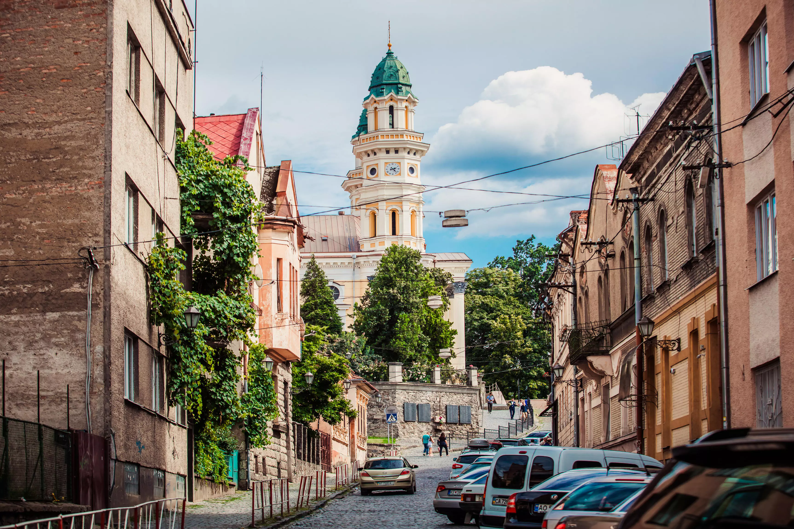

Ужгород - Стрипа - Оріховиця
Характеристика:
Маршрут:
Ужгород - Стрипа - Оріховиця
Довжина:
36 км.
Тривалість:
6 годин.
Складність:
для новачків.
Опис:
Прикольний трек! Не дуже тяжкий.
Спочатку багато асфальту
– до Стрипи. Від Стрипи до Оріхівця чудова ділянка близько 7 км: лісова переходить у ґрунтову
доріжку, доступна тільки для гірських велосипедів.

Ужгород
У́жгород — місто на річці Уж в Закарпатській області України, центр Ужгородської міської
громади та Ужгородського району.
Цікаві місця:
● Ужгородський замок
● Кафедральний греко-католицький собор
● Хоральна синагога
● Пішохідний міст через Уж
● Центр Ужгорода з боку моста Масарика
● Ужгородський замок
● Кафедральний греко-католицький собор
● Хоральна синагога
● Пішохідний міст через Уж
● Центр Ужгорода з боку моста Масарика
Стрипа
Стри́па — село в Ужгородському районі Закарпатської області, на потоці Циганка.
Цікаві місця: Церква св. Петра і Павла. 1999.
Камінь під спорудження церкви за проектом Ужгородського архітектора А. Медвецького було
закладено 16 липня 1995 р. Урочисту проповідь виголосив помічний єпископ Йосип Головач.
Присутніми були парох о.Павло Сабов та проректор Ужгородської духовної академії о.Іван Тидір.
Церква св. Трійці. 1999.
Будівництво цегляної церкви організував о. Антон і в 1995 р. було освячено головний камінь.
Оріховиця
Орі́ховиця — село в Ужгородському районі Закарпатської області на річці Уж.
Цікаві місця:
Церква Успіння Пр. Богородиці. 1815.
У 1751 р. за пароха Іоана Реберка згадують дерев'яну церкву св. арх. Михайла з усіма образами
і трьома дзвонами. У селі було 159 вірників.
Інтер'єр церкви перемалювали ,а у кінці 1980-х років кам'яну огорожу довкола церкви замінено
дротяною на бетонному фундаменті, оновлено штукатурку стін, перекрито бляхою турню. Очевидно,
тоді ж перемальовано ікони.
На церковній вежі — три дзвони. Угорський напис на середньому дзвоні повідомляє, що вилив його Ласло Шандор у Малих Ґеївцях у 1904 р.
На церковній вежі — три дзвони. Угорський напис на середньому дзвоні повідомляє, що вилив його Ласло Шандор у Малих Ґеївцях у 1904 р.
Маршрут на мапі: